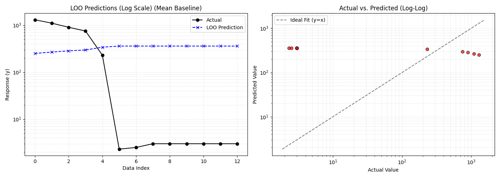
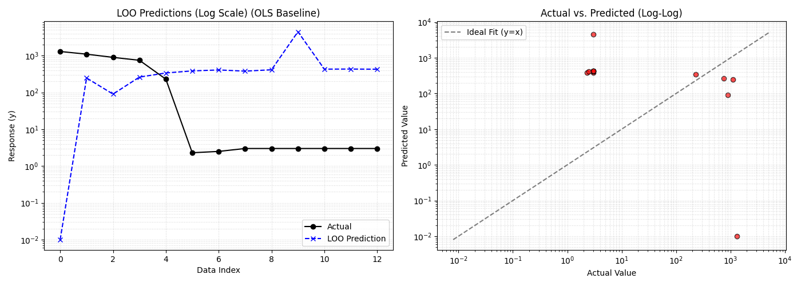
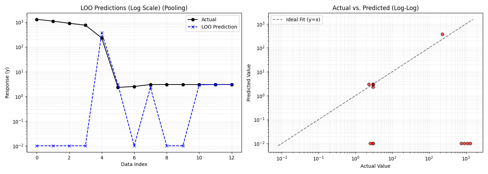

Miroslav Kárný, Tomáš Procházka
Department of Adaptive Systems, Institute of Information Theory and Automation, Czech Academy of Sciences
as.utia.cas.cz, prochazka@utia.cas.cz
Settings Vector g: long and categorical
e.g., [frequency, substrate, operator, ...]
Regressors z: short and numerical
Physical continuous inputs (initial and working pressure).
Response y: numerical (scalar)
Observed physical outcome of the setting (thickness).
Learning of p(y | z, g, Θ) needs too much data
Instead of one complex model, we build a Pool of 'Experts':
Single predictive distribution is a weighted geometric mean of individual predictors:
Combining sub-models into a unified forecast by minimizing relative-entropy:
The optimal weights ϕ minimize F(ϕ)
Search for the optimal g.
Benchmarked against two standard references:



Questions?
Kárný Miroslav: Optimised conjugate prior for model structure estimation in the exponential family, Expert Systems With Applications, DOI: 10.1016/j.eswa.2025.127716 [2025]
Kárný Miroslav: Optimized geometric pooling of probabilities for information fusion and forgetting, Automatica 177 DOI: 10.1016/j.automatica.2025.112337 [2025]